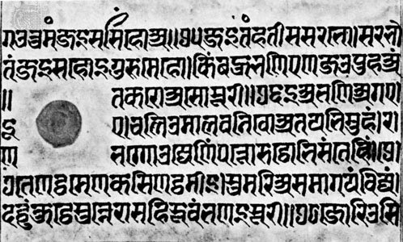

The most important examples of calligraphy to develop from Aramaic writing in its dissemination through South and Central Asia were the scripts of India, especially of Sanskrit. Indic writing first appeared in the 3rd century BCE during the reign of Ashoka (c. 265–238 BCE). The leader of a great empire, Ashoka turned from military success to embrace the arts and religion. Ashoka’s edicts were committed to stone. These inscriptions are stiff and angular in form. Following the Ashoka style of Indic writing, two new calligraphic types appear: Kharoshti and Brahmi. Kharoshti was used in the northwestern regions of India from the 3rd century BCE to the 4th century CE, and it was used in Central Asia until the 8th century. It is characterized by a vigorous pen letter, reflecting the influence of Middle Eastern calligraphy.
Copper was a favoured material for Indic inscriptions. In the north of India, birch bark was used as a writing surface as early as the 2nd century CE. Many Indic manuscripts were written on palm leaves, even after the Indian languages were put on paper in the 13th century. Both sides of the leaves were used for writing. Long rectangular strips were gathered on top of one another, holes were drilled through all the leaves, and the book was held together by string. Books of this manufacture were common to Southeast Asia. The palm leaf was an excellent surface for pen writing, making possible the delicate lettering used in many of the scripts of southern Asia.
Visually, Sanskrit is associated most closely with the alphabetic form named Devanagari. In a 15th-century pen-written manuscript in the Freer Gallery at Washington, D.C., it can be observed that the pen’s nib is cut wide, giving a considerable difference in thick and thin strokes. The alphabetic signs hang down from a strong horizontal top line that may become connected. Through the years the strong horizontal and vertical emphasis of inscription writing has been preserved in the Devanagari script, and modern typefaces and teaching manuals stress this stiffness of execution. In informal documents this historical script can have more warmth and grace.
